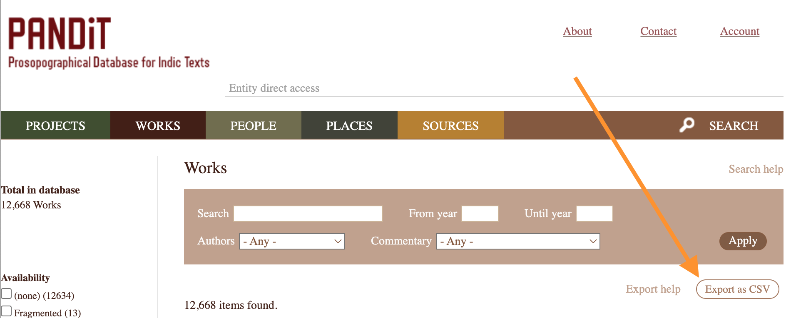
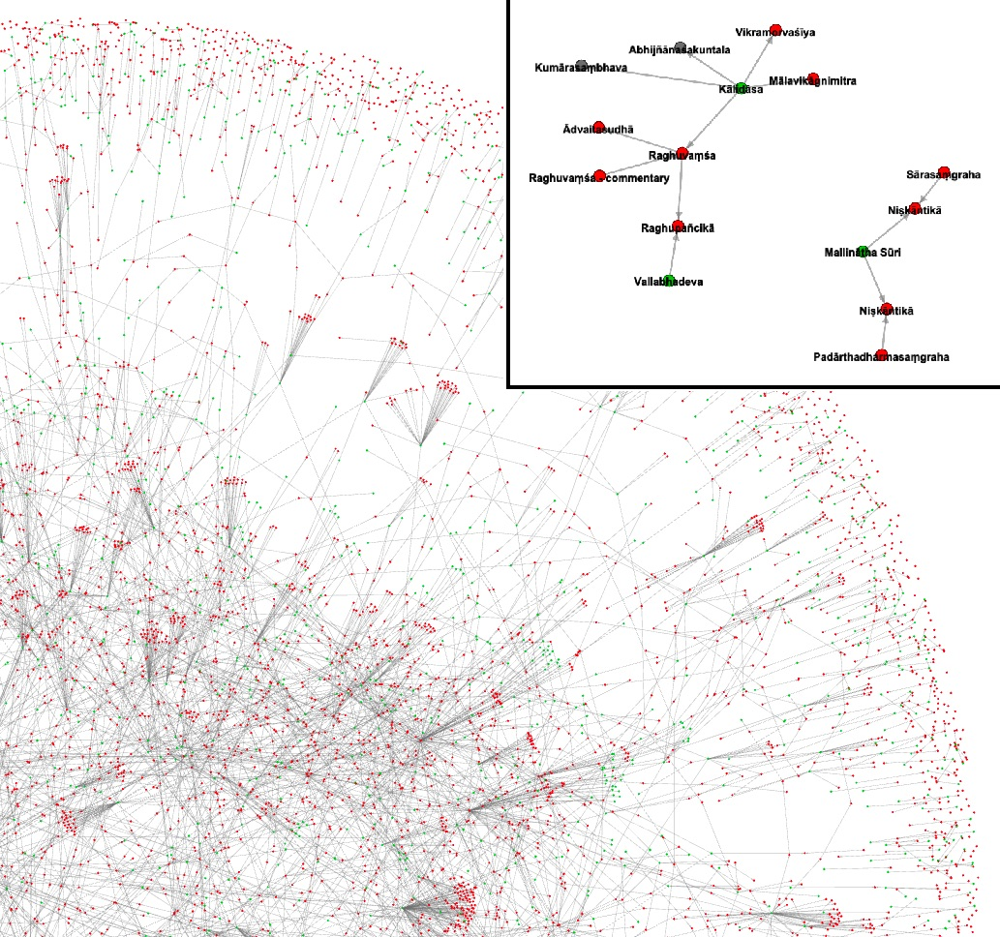
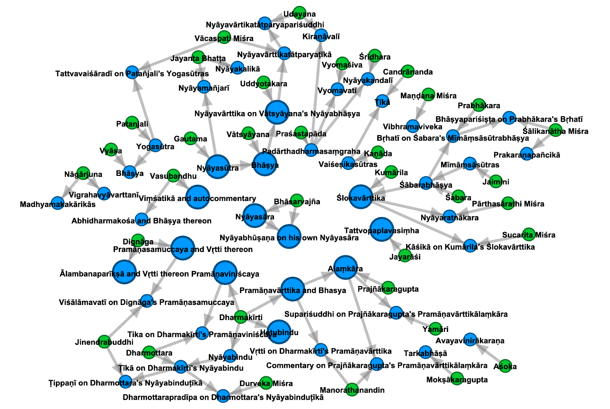

The Challenge of Navigating Sanskrit's Intellectual Networks
As a student of Sanskrit, I've always struggled to keep track of the vast network of works and authors. Simply remembering who wrote what and which texts comment on others is challenging enough, let alone the many other factors, like dates, locations, layers of intertextual engagement, etc., that shape Sanskrit intellectual history. During grad school, I remember placing sticky notes on my bedroom wall, hoping to arrange and rearrange them as my understanding deepened. I can't say my wall project was all that successful, but years later, I think it symbolizes clearly the need I had.
To deal with this problem, my go-to resource from around 2010 onward was Karl Potter's Encyclopedia of Indian Philosophies Bibliography, an invaluable online reference I referred to constantly. The site is no longer maintained after Prof. Potter's passing in 2022, but it is still available through Archive.org's Wayback Machine (see discussion and link on this Indology forum post).
Then, in late 2016 and early 2017, came Pandit Project, also known as the Pandit Prosopographical Database of Indic Texts, led by Yigal Bronner. This initiative not only re-digitized Potter's bibliography in a more machine-actionable format but also expanded it significantly over the years by creating and incorporating new datasets, including a substantial collection of Vedanta materials. I first encountered Pandit during a May 2017 workshop on SARIT at the Vienna Academy of Sciences. While the site offers a wealth of information, what stood out to me was its hyperlinked presentation of authors and works—a feature that directly addressed the comprehension challenges I had faced. (For a glimpse of its earlier design, see this August 2024 snapshot; the site received a facelift the following month.)
Still, something was missing. From other contexts—like the Wikipedia philosophy game or Six Degrees of Kevin Bacon—I knew how linked information could reveal surprising relationships within just a few "hops." But with Sanskrit works and authors, that kind of fluid, networked exploration still felt out of reach. Then I discovered The Oracle of Bacon, a playful online tool that visually maps "Kevin Bacon connections" among movie actors, and it inspired me to get bolder about the Pandit data. I started playing around with "scraping" the website (i.e., programmatically grabbing and parsing the HTML) and "surfing" the wiki structure, jumping from page to page and collecting connected groups of nodes without manually clicking through the site. Eventually, I realized it would be even better to work offline, and fortunately, the full database—or even just the Works subset which was all I needed—was available for export.

The final key piece was incorporating the NetworkX library, which allowed me to structure the data as a network of nodes and edges while also enabling basic on-the-fly visualization. With that, Pandit Grapher was born: a simple Python script that generated graphs and, perhaps more importantly, exported them for use in the open-source Gephi visualization software. I shared everything on GitHub (see this archived v1 release on Zenodo) and even included a particularly busy graph as a figure in my PhD dissertation on Bhasarvajña's Nyayabhusana.


I knew, however, that Pandit Grapher in its original form wasn't particularly useful to most Sanskritists. It needed to be far more user-friendly, but at the time, I wasn't confident enough to start working with more advanced front-end frameworks like D3.js. Over the years, however, I got better at building and maintaining web apps, and when ChatGPT made it dramatically easier to learn new programming technologies and tackle ambitious projects, I got bolder again. This past December, with some free time on my hands, I revisited the project.
Now, Pandit Grapher has evolved into Panditya (full name Pandityataraka). With interactive, in-browser visualization, it makes exploring these networks not only accessible to more people but also more intuitive, and even fun. Panditya finally bridges the gap between structured data and human comprehension, allowing non-technical users to dynamically explore how Sanskrit thinkers relate to one another through their texts, at least as revealed by traditionally transmitted associations of commentary and authorship.
How to Get Started with Panditya
Head over to panditya.info and try it out. Use the auto-complete dropdown to select an entity—say, Bhasarvajña's Nyayasara (89000)—leave the Hops setting at the default 1, then hit the big red Generate Graph button. An interactive graph will appear, showing your selected entity along with all those connected to it within one hop (Authors are purple, Works are red). Now, increase the Hops setting to 2 and regenerate the graph. If the entity has enough connections, the network will expand. Go up to 3, and the complexity grows further, and you may need to zoom out (pinch to zoom on Mac) or move around (click and drag the background). Even with just this much, you can quickly start to grasp the web of authorial and commentarial relationships.

Now, go back to a simpler graph if needed, and right-click (Cmd + click on Mac) on a node. A context menu will appear, showing the entity's unique ID within Pandit. The first submenu, View on, lets you jump to an external site to explore the entity. Currently this is just Pandit, but I plan to add links to multiple e-text repositories. The second submenu, Recenter, allows you to quickly generate a new graph centered on a different node, with 1-3 hops. The third submenu, Exclusions - Collapse, lets you simplify the view by preventing a selected node from expanding while regenerating the graph—with more refinements planned in the future.
But wait! you might be thinking, the graph that I'm seeing is way too crowded! The labels overlap, and it's hard to read! And yes, that's often true, because it turns out there's no single setting that works perfectly for every graph. To help with this, you'll find a set of controls below the graph that lets you tweak the forces in the D3 simulation. Adjusting these can help spread things out for better clarity. There's even a Freeze button that temporarily disables all forces while still allowing you to manually drag nodes around for a clearer view, whether for a screenshot or just to understand better.
That's it! I hope you start using it whenever you have a question about Sanskrit authors and/or works that such a visual aid could help answer.
Conclusion: Why it Matters and How You Can Help
Pandit has done a tremendous service by preserving the Potter Bibliography, making it machine-actionable, and expanding the effort to document Sanskrit works and authors. However, a wiki format doesn't provide an easy way to grasp connections at a glance. Panditya, derived from and building directly on Pandit, finally unlocks this potential, making it easier for more people to explore, understand, and ultimately contribute to improving Pandit itself.
Interactive visualization isn't just about aesthetics—it transforms how we engage with information. For students, Panditya gamifies Sanskrit intellectual history, making complex traditions more intuitive to explore. For researchers, it streamlines reference work and reveals relationships and inconsistencies that may otherwise have remained hidden, sparking new insights and discoveries. And for digital humanists, it demonstrates how structured data can be more fully utilized for meaningful, interactive scholarship.
Panditya is still at a young stage of development, but it's poised to develop fast. If you're interested, visit panditya.info/about to learn more. If you've got an idea, regarding data suggestions, feature requests, or whatever else, reach out to me directly, or come to the GitHub page and open an Issue. For a deeper technical dive, keep an eye out for my write-up at the ISCLS (Computational) Panel of the World Sanskrit Conference in Kathmandu this year, or feel free to contact me for a draft.
(EDIT 2 May 2025: For those who want more detail, the pre-print of my Panditya-SETI paper for WSC 19 is available now to read on Academia.
EDIT 16 May 2025: I was also interviewed about the project by Raj Balkaran for the Indian Religion podcast of the New Books Network: Panditya: Mapping Sanskrit Texts Online.)